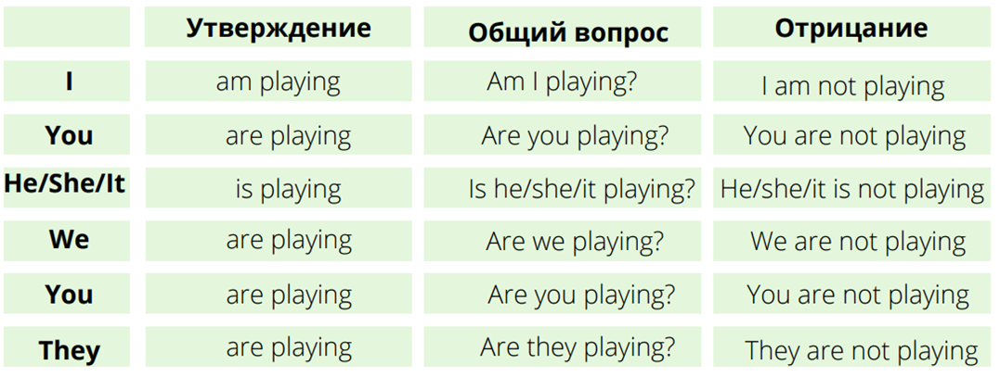

| Действие происходит непосредственно в момент речи | Is anyone using computer now? Сейчас кто-нибудь работает на компьютере? |
| Действие растянуто во времени, события развиваются в настоящий период времени, происходят непрерывно | He is getting stronger. Он становится сильнее. |
| Действие длится ограниченный период времени, временная ситуация | We are staying with my aunt now. Сейчас мы гостим у тёти |
| Запланированное действие в будущем | Tomorrow we are going to the local flower festival. Завтра мы идём на местный фестиваль цветов. |
| В сочетании с наречиями частотности (always, constantly и т. д.), когда речь идёт ораздражающих привычках, особенностях | You're always spoiling everything! Всегда ты всё портишь! |